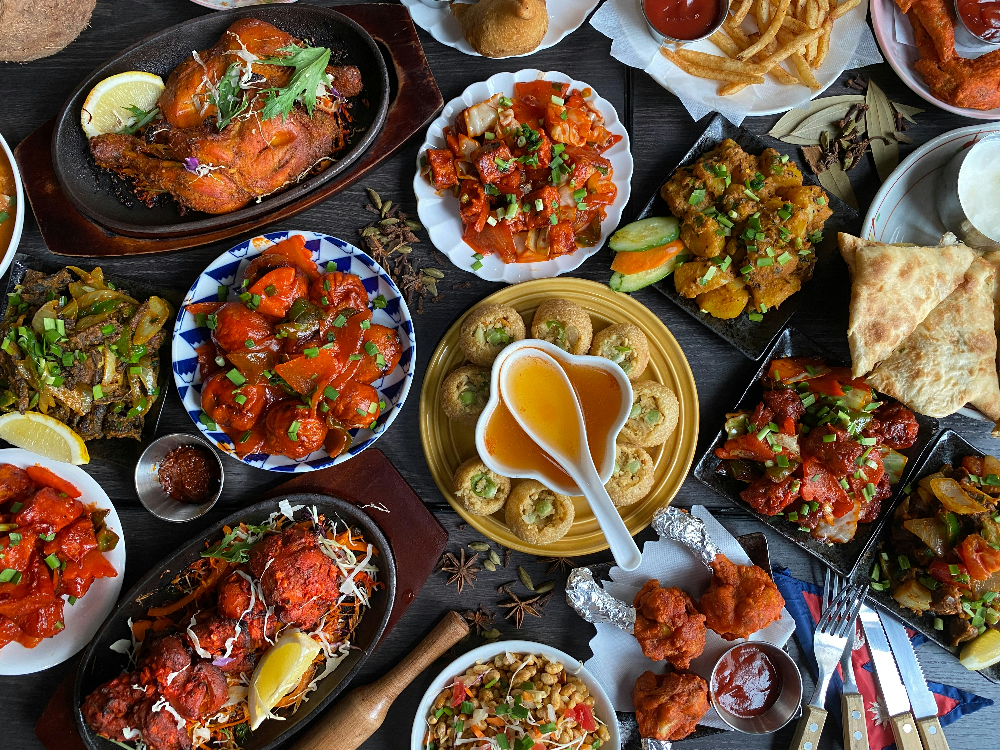
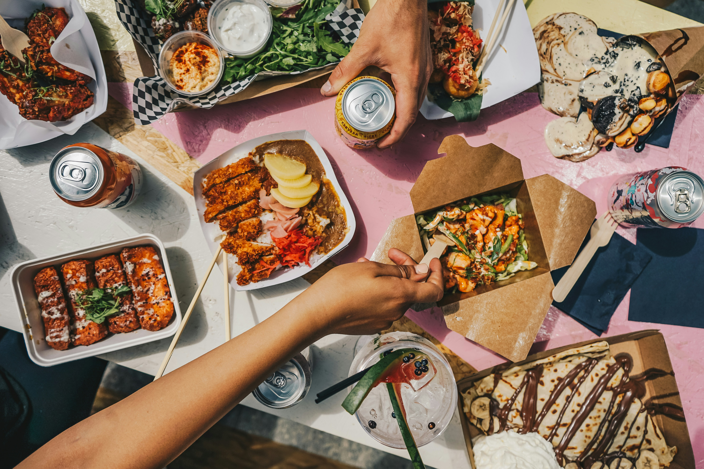

Food Around the World


Traveling allows people to try different foods and cultures. Traveling around let's one experience different types of food. Food is an important part of traveling because it reflects that particular countries culture and how they eat. I think this is the most important part of travel is eating a different array of culinary treats.
From traditional meals to authentic street meals, every location and or different parts of the city offers unique flavors. Exploring food from around the world makes traveling more exciting. Different types of food are always fun to try even if they are something you aren't use to. You will never know what ethnic dishes taste good if you don't atleast try them. This is espically important and vital to one's experience when they are visting different countries and cultures.